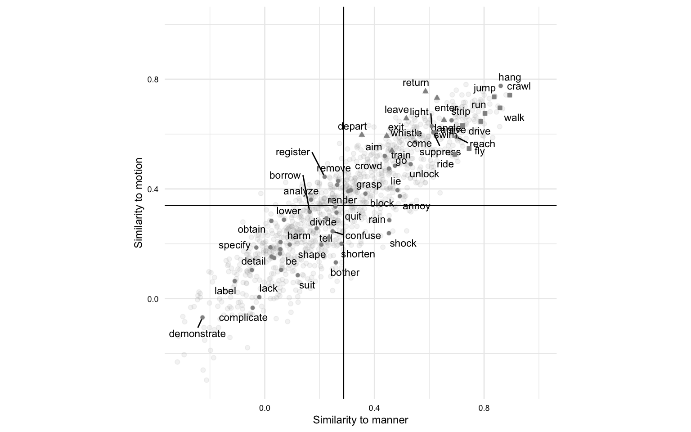
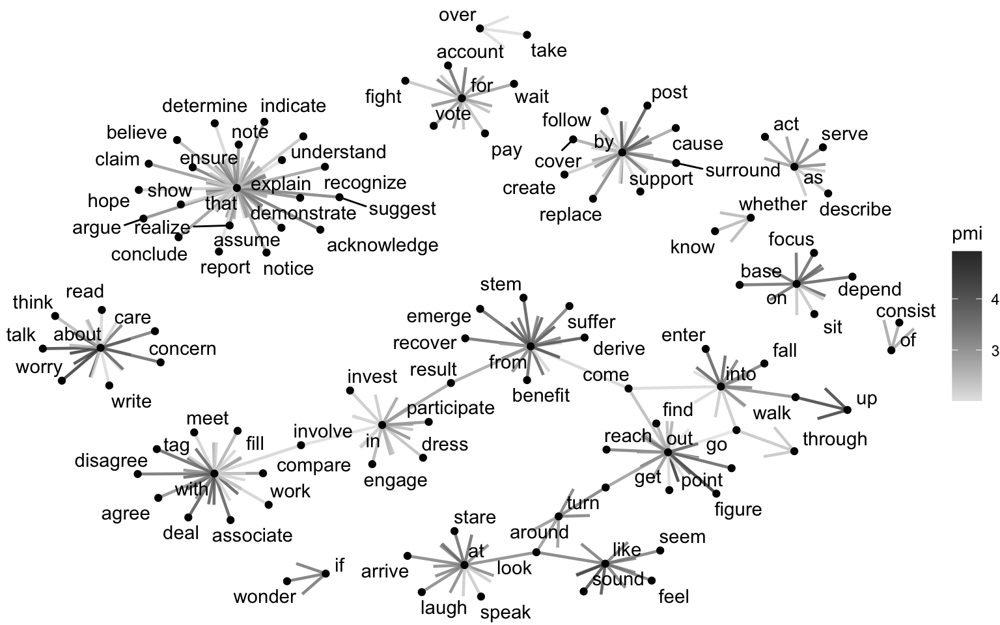
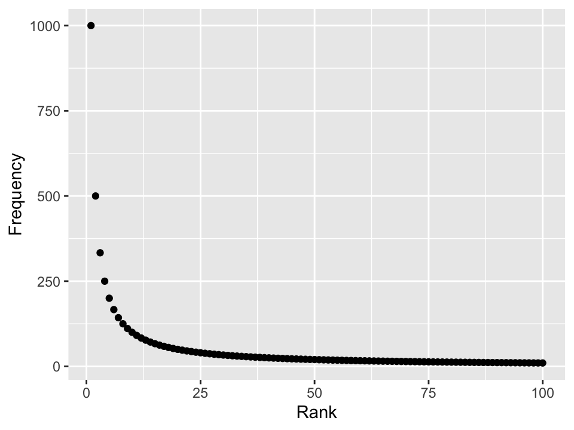
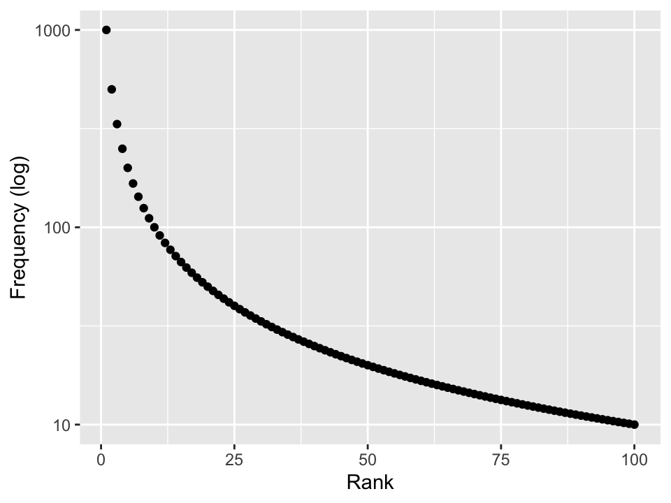
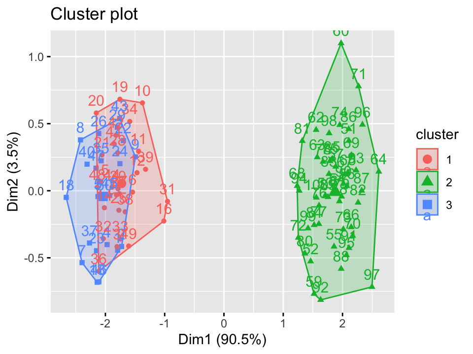
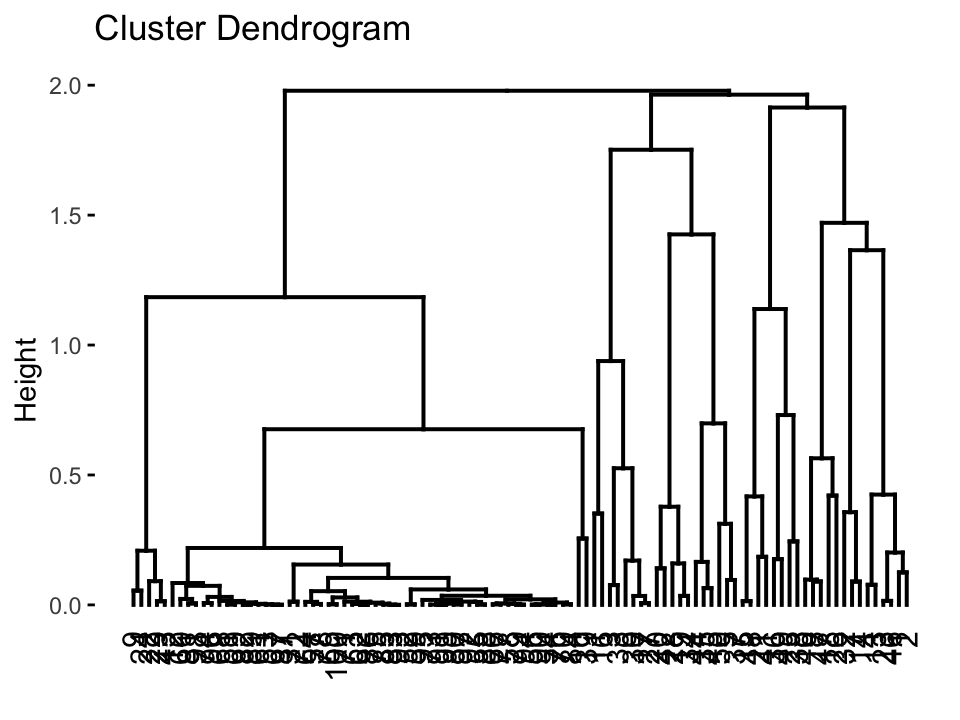
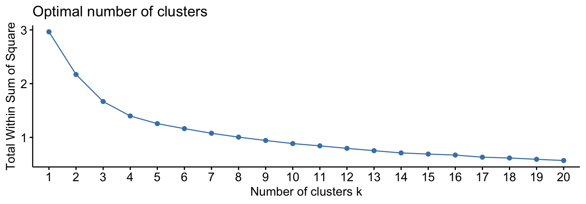
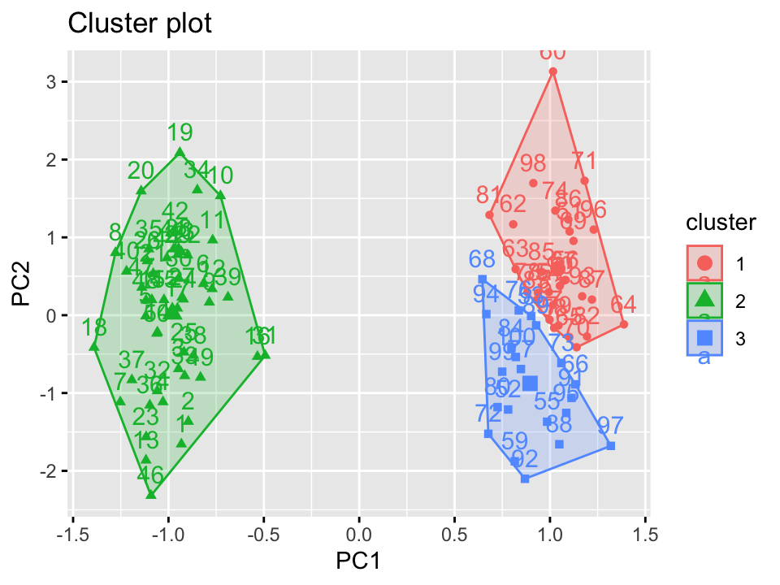

Explore
“The data speaks for itself, but only if you are willing to listen. - Nate Silver”
Dr. Jerid Francom
Mar 27, 2024
Overview
- Orientation
- Descriptive analysis
- Unsupervised learning


Process


Orientation
Exploratory data analysis
Goals
- Discover patterns
- Describe emerging relationships
- Posit hypotheses
When to use
- Literature is scarce
- Gap in knowledge is wide
- New territory
How to use
- Identify, Inspect, Interrogate, Interpret
- Iterative process
- Update: unit of observation, variables, methods
Descriptive analysis
Frequency analysis: what is it?
Simply put, its counting tokens.
| Method | Description | |
|---|---|---|
| Raw frequency | Number of occurrences of a token within a corpus | |
| Dispersion | Distribution of a token across a corpus | |
| Relative frequency | Proportion of a token in relation to the total number of tokens in a corpus |
What can a frequency analysis tell us?
- Varying usage and distributin of tokens can signal:
- Different populations of speakers
- Different topics, genres, registers, etc.
- Cognitive processes (entrenchment, salience)
Things to consider
- Tokenization
- Operationalization
- Zipf distribution


Co-occurrence analysis: what is it?
Identify patterns of association between tokens
| Method | Description | |
|---|---|---|
| n-grams | Sequence of n tokens | |
| Collocation | Tokens that frequently co-occur |
What can a co-occurrence analysis tell us?
Patterns of association between tokens can signal:
- Grammatical structures
- Semantic relationships
- Formulaic/ Idomatic expressions
Things to consider
- Operationalization
- Context window
- Measures of association
- Pointwise mutual information
- Log-likelihood ratio
Unsupervised learning
Clustering: what is it?
Bottom-up approach to grouping similar data points
| Method | Description | |
|---|---|---|
| K-means | Partition data into k clusters | |
| Hierarchical clustering | Build a tree of clusters |
What can clustering tell us?
- Patterns of similarity/ dissimilarity
- Number of groups
- Homogeneity within groups
- Heterogeneity between groups


Things to consider
- Previous knowledge
- Number of clusters
- Distance metric (Heirarchical clustering)

Dimensionality reduction: what is it?
Operation to reduce the number of variables in a dataset, while preserving as much information as possible
| Method | Description | |
|---|---|---|
| PCA | Linear transformation to reduce dimensionality | |
| t-SNE | Non-linear transformation to visualize high-dimensional data |
What can dimensionality reduction tell us?
- How variables are related
- How redundant variables are
- Identify dimensions that explain the most variance
Things to consider
- Interpretability
- Number of dimensions
- Overfitting/ Underfitting

Word embeddings: what is it?
Use of distributed representations of words in a continuous vector space where words with similar contextual distributions are closer together
| Method | Description | |
|---|---|---|
| Word2Vec | Popular word embedding model | |
| GloVe | Global vectors for word representation |
Note: word embedding models are highly contingent on the size of the corpus, the algorithm used, and parameters set.
What can word embeddings tell us?
- Semantic relationships between words
- Grammatical relationships between words
- Analogies between words
- Clustering of words based on context
Things to consider
- Context window
- Number of dimensions
- Pre-trained models vs. training your own model
Wrap-up
Final thoughts
- Exploratory data analysis covers a wide range of methods and techniques.
- Of the three approaches we will cover, it requires the most creativity and flexibility.
- The evaluative process is iterative and associative, and the results are often open to interpretation.
References

Explore | Quantitative Text Analysis | Wake Forest University
Kassambara, Alboukadel, and Fabian Mundt. 2020. Factoextra: Extract and Visualize the Results of Multivariate Data Analyses. https://CRAN.R-project.org/package=factoextra.
Meyer, David, and Christian Buchta. 2022. Proxy: Distance and Similarity Measures. https://CRAN.R-project.org/package=proxy.
Wijffels, Jan, and Kohei Watanabe. 2023. Word2vec: Distributed Representations of Words. https://CRAN.R-project.org/package=word2vec.